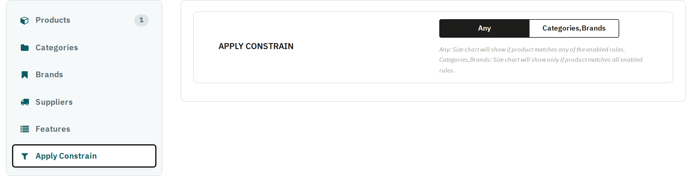

The Apply Constrain sub-tab (the last one, below Features) decides how several enabled rules work together. Any (the default): the chart shows when the product matches any one of the enabled rules. Choose the rule types instead (for example Categories,Brands) to show the chart only on products that match all of them — for example only on T-shirts of one brand.
